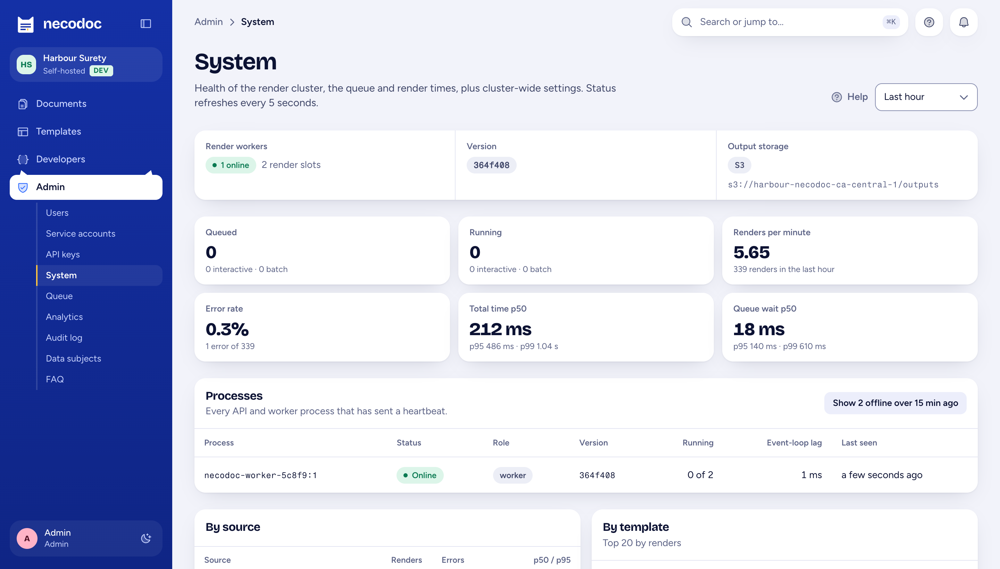

necodoc / Architecture
Architecture
necodoc is one container image that runs as a stateless API or as render workers. Durable state lives in a Postgres and a bucket you already operate. This page is the reference for your architecture review; the same content is in the review pack PDF.
Matches docs/features/self-hosting.md and the devdocs page self-hosting/roles-and-scaling. Reviewed with each release.
| Component | Does | Scales by | State |
|---|---|---|---|
| API ROLE=api | Serves /api/v1 and the web app; authenticates keys and sessions; validates data against the template's fields; enqueues renders; issues signed download links. | Replicas behind your load balancer | None |
| Render worker ROLE=worker | Claims render jobs, runs headless Chromium for designed and HTML documents, stamps overlays with pdf-lib, applies PDF/A, PDF/UA and certification, writes the PDF. | Replicas; RENDER_CONCURRENCY slots each; KEDA on queue depth | None. A job on a lost worker retries. |
| Postgres | Templates and immutable versions, users and keys, generation log, append-only audit log, and the job queue (pg-boss). | Your database tier. This is the throughput ceiling. | All durable records |
| Object storage | Generated PDFs and uploaded assets. Any S3-compatible bucket (AWS S3, MinIO, Wasabi, Cloudflare R2), Azure Blob, or a shared disk. | Your storage service | PDF bytes |
| Identity provider | Sign-in for people over OIDC, SAML 2.0 or a trusted header; IdP groups map to necodoc roles. | Yours | Yours |
| Single process ROLE=all | API and worker in one process, for evaluation and small installs on Compose. | Not meant to | None |
Deployment
The same image and environment variables in every option. Nothing calls home, so it runs without outbound internet.
Postgres, migrations, API, a worker and the app from one .env. For evaluation and small installs.
docker compose up \ --scale worker=2deploy/compose
Separate API and worker deployments, migrations as a pre-install hook, pod disruption budgets, graceful drain on scale-down. Bring your own Postgres.
helm install necodoc \ deploy/helm/necodoc \ --set secrets.existingSecret=necodocdeploy/helm/necodoc
KEDA scales the worker deployment on queue depth read from Postgres. Without KEDA, both deployments can use a CPU autoscaler.
worker:
keda:
enabled: true
jobsPerReplica: 4values.yaml · KEDAhelm lint, helm template and kubeconform but hasn't been verified on a live cluster, and there's no published image registry yet, so you build the images. {registry.status}Integration patterns
No packaged connector. A versioned REST API described by OpenAPI 3.1, a JSON Schema per template version, and generated SDKs for TypeScript, Python, .NET and Java.
A Synchronous
For a certificate issued while the broker waits. The response is the PDF, with X-Generation-Id.
B Asynchronous
For bind and issue events. async: true returns 202; a signed webhook brings a downloadUrl.
C Batch
Up to 10,000 rows per batch. Progress, cancel, and one ZIP or one combined packet at the end.
# Issue a bond from a published template version curl https://necodoc.internal.example/api/v1/templates/$TEMPLATE/versions/3/generate \ -H "x-api-key: $NECODOC_KEY" \ -H "content-type: application/json" \ -d '{ "subject": "BND-2026-004518", "response": "json", "data": { "principal": "Northwind Construction Ltd.", "obligee": "City of Hamilton, Public Works", "bond_amount": 2450000, "effective_date": "2026-11-02" } }' # 200 { "id": "9f1c…", "pageCount": 3, "downloadUrl": "https://…?sig=…&exp=…" }
Every response carries X-Request-Id. Errors are JSON with code and fieldErrors. 401 bad key · 403 scope or IP · 422 invalid data · 429 rate limit with Retry-After.
| Data | Stored in | Leaves your boundary |
|---|---|---|
| Templates, versions, snippets, themes | Your Postgres | No |
| Input data for each PDF | Your Postgres (generation log), with a retention period you set | No |
| Generated PDFs, assets | Your bucket, blob container or disk, in your region | Only through signed, expiring links you issue |
| Logs, metrics, traces | Your log shipper, Prometheus, OTLP collector. PII masked in logs. | No |
| Webhook payloads | Sent to endpoints you configure | Yes, to your URLs, HMAC-SHA256 signed |
| Signing packages | Your Postgres; fetched by your e-sign integration | Only if your code sends them on |
| Template content, page images | Sent to Anthropic's API, not stored by necodoc elsewhere | Only if ANTHROPIC_KEY is set for the AI assistant and field detection |
Scaling and availability
Measured on one machine by the benchmark. Your numbers depend on your Postgres and your nodes; rerun it on them.
Renders from people and sync API calls take priority over batch rows, so a renewal run doesn't slow a form fill.
A job on a killed worker is picked up by another. Invalid batch rows fail alone; the rest continue.
It carries the queue as well as the data. Size it for both; we don't claim unlimited workers.
Health and readiness endpoints on every process; Admin › System lists each API and worker heartbeat.
Observability
/metrics on METRICS_PORT: HTTP, render, queue depth and age, worker slots
Known limits
Each links to the known-limitations section of its spec. All known limitations
Guidewire, Duck Creek and Majesco integrate over the REST API.
So one region per install; run one per region if residency requires it.
Operators build them from source. SDKs aren't on package registries yet either.
OpenShift isn't tested.
Take it to your review board
This page, the data flows, the controls list and the known limits, versioned with each release.